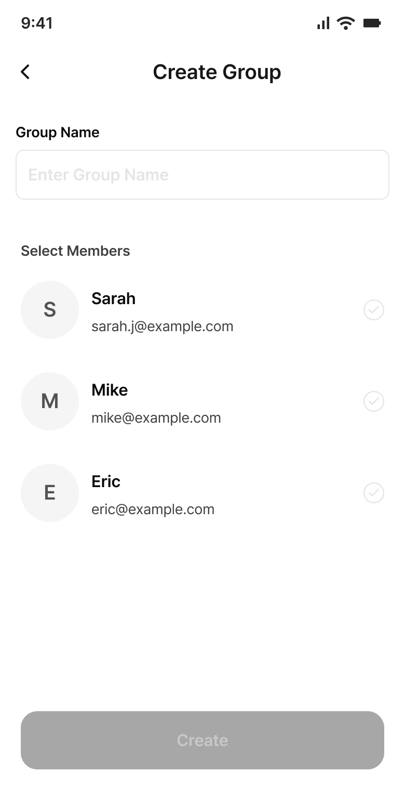
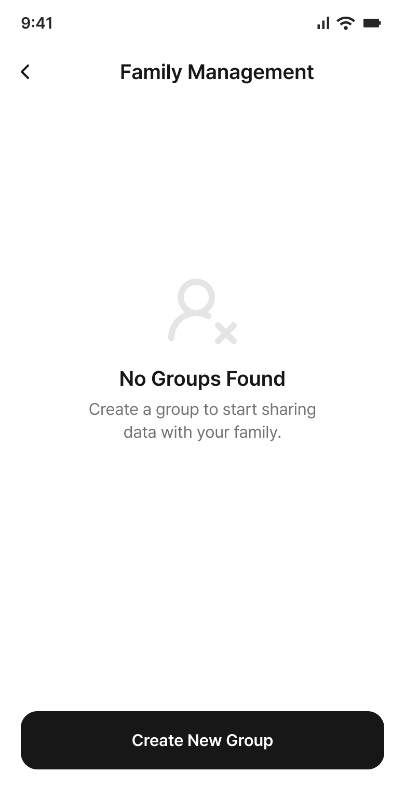
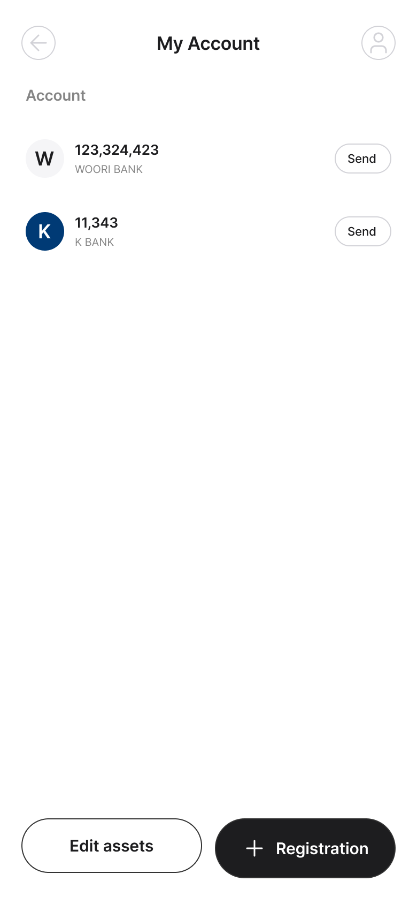
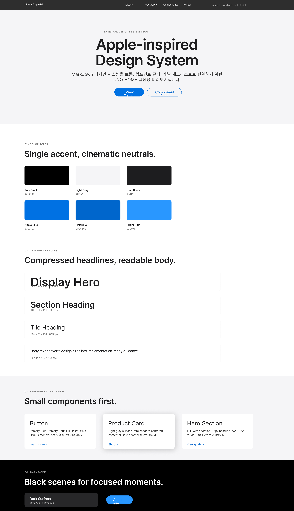

디자이너 결정
변경을 수락하면 GitHub Issue에 designer-approved 라벨을, 거부하면 designer-rejected 라벨을 붙입니다.
Phase A에서는 결정 기록과 viewer/manifest까지 처리합니다. 코드 자동 수정은 다음 Phase B에서 marker 기반으로 제한해 진행합니다.
#1 · 디자이너 검토
mo - Family Management 73:2090
🧱 구조 변경
이전 baseline 이미지 없음

- Key
auto_mo_family_management_73_2090- 코드 경로
src/screens/FigmaFrameTracking.ts- 감지 이유
- Node 'auto_mo_family_management_73_2090' missing from base snapshot
- 처리 결정
- Mapping apply mode is report-only
- Classes require manual-only handling in Phase 5: structure
#2 · 디자이너 검토
mo - Home Hub 73:2076
🧱 구조 변경
이전 baseline 이미지 없음

- Key
auto_mo_home_hub_73_2076- 코드 경로
src/screens/FigmaFrameTracking.ts- 감지 이유
- Node 'auto_mo_home_hub_73_2076' missing from base snapshot
- 처리 결정
- Mapping apply mode is report-only
- Classes require manual-only handling in Phase 5: structure
#3 · 디자이너 검토
test1 35:244
🧱 구조 변경
이전 baseline 이미지 없음

- Key
auto_test1_35_244- 코드 경로
src/screens/FigmaFrameTracking.ts- 감지 이유
- Node 'auto_test1_35_244' missing from base snapshot
- 처리 결정
- Mapping apply mode is report-only
- Classes require manual-only handling in Phase 5: structure
#4 · 디자이너 검토
test2 35:382
🧱 구조 변경
이전 baseline 이미지 없음

- Key
auto_test2_35_382- 코드 경로
src/screens/FigmaFrameTracking.ts- 감지 이유
- Node 'auto_test2_35_382' missing from base snapshot
- 처리 결정
- Mapping apply mode is report-only
- Classes require manual-only handling in Phase 5: structure
#5 · 디자이너 검토
Apple-inspired Design System / Generated Preview 2:2
✏️ 텍스트 변경 🧩 속성 변경 📦 에셋 변경 🧱 구조 변경

현재 스냅샷 이미지 없음
- Key
figma_appleInspiredDesignSystemGeneratedPreview_2_2- 코드 경로
src/screens/FigmaFrameTracking.ts- 감지 이유
- textHash changed
- componentPropsHash changed
- propsHash changed
- boundingBox changed to or from null
- 처리 결정
- Mapping apply mode is report-only
- Classes require manual-only handling in Phase 5: asset, structure
- Classes not allowed by mapping: component-props, asset